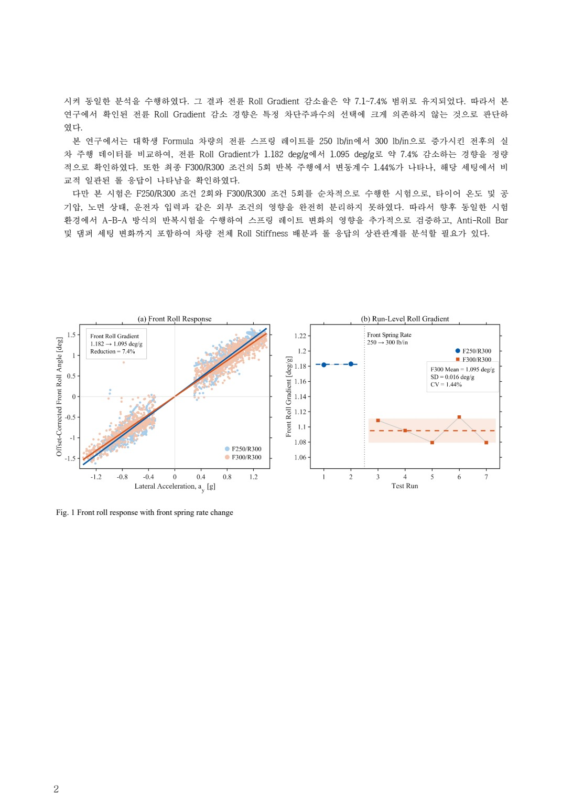
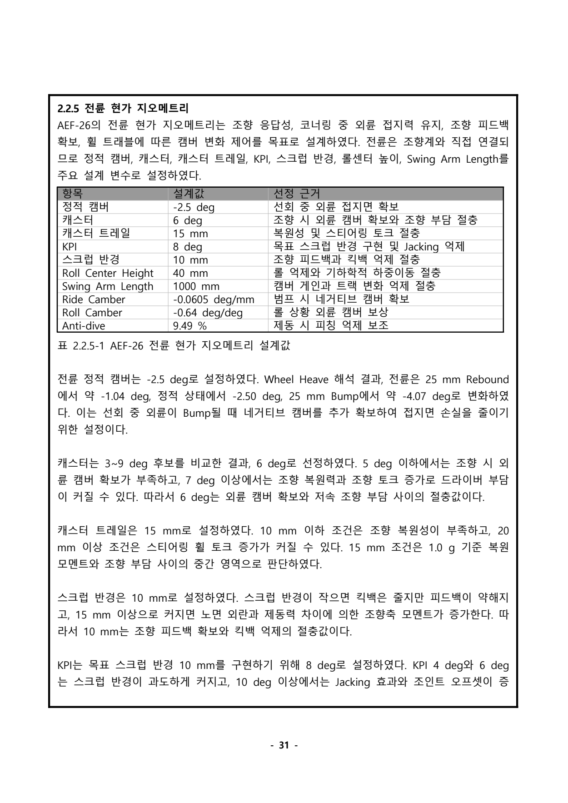
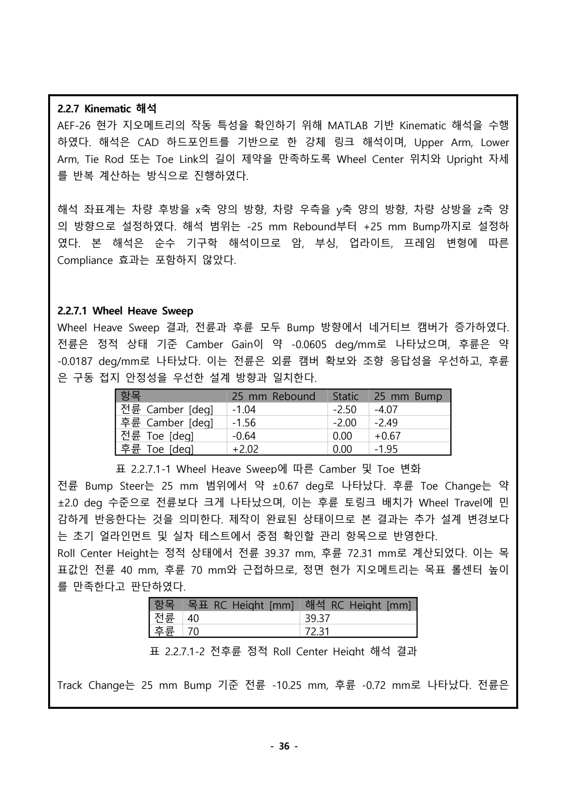
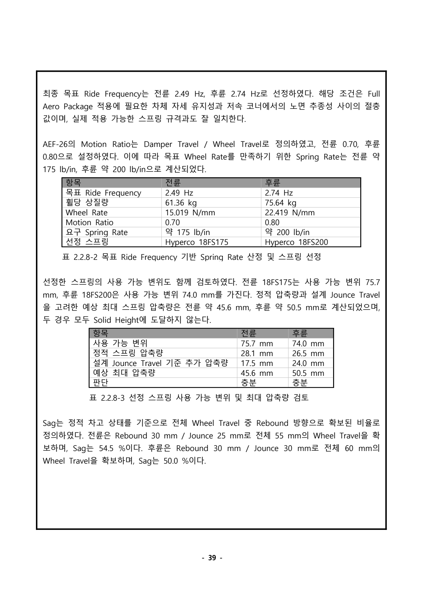
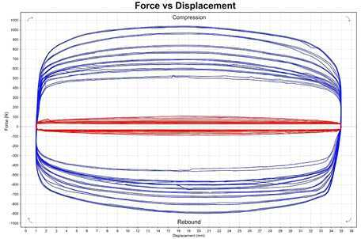
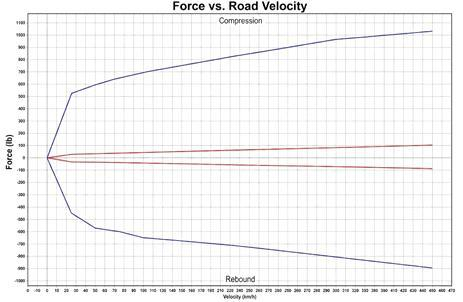
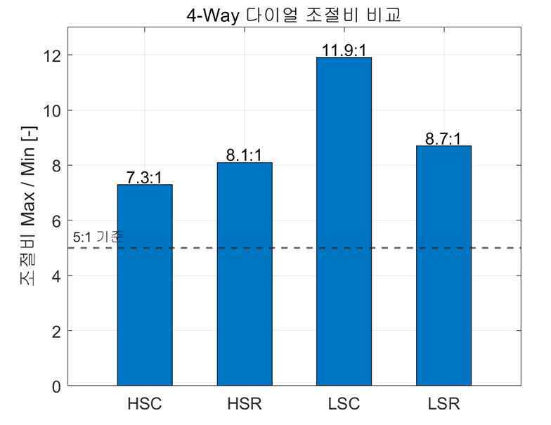
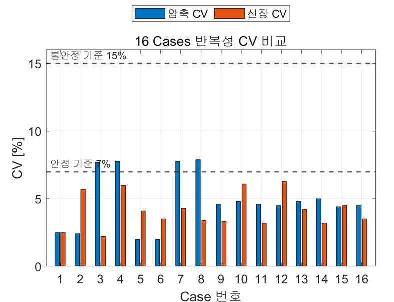

시험 질문과 개인 역할
출발점: 운전 감각을 비교 가능한 질문으로 바꾸기
Formula Student 차량의 서스펜션을 담당하며 직접 주행한 경험을, 세팅의 전후 차이를 설명하는 자료로 연결했습니다. 질문은 “스프링을 단단하게 바꾸면 좋아지는가”보다 좁게 설정했습니다. 후륜 조건을 유지한 상태에서 전륜 스프링 레이트 변경이 준정상 선회의 롤 응답에 어떻게 나타나는지를 비교했습니다.
전륜 스프링은 250에서 300 lb/in으로 바꾸고 후륜 스프링 300 lb/in과 후륜 안티롤바 설정은 유지했습니다. 전륜 레이트가 20% 증가했다는 사실과 차량에서 관찰한 롤 기울기 감소율은 서로 다른 값입니다. 부품의 입력 변화가 차량 전체의 응답에 그대로 같은 비율로 나타난다고 가정하지 않았습니다.
맡은 일과 협업의 경계
제가 맡은 일은 직접 주행, 서스펜션 세팅, 계측팀이 전달한 원시데이터의 분석과 결과 정리였습니다. 센서 로깅과 계측 플랫폼은 계측팀의 기여이며 프로그래밍에는 도움을 받았습니다. 드라이버·설계 담당자·데이터 해석자의 관점을 연결한 경험으로 설명합니다.
비교 기준을 정한 이유
단순한 최대 롤각은 그 순간의 횡가속도와 주행 입력에 영향을 받습니다. 따라서 서스펜션 변위와 횡가속도의 관계를 이용해 deg/g 단위의 롤 기울기를 비교했습니다. 같은 수치를 다시 읽을 수 있도록 스프링 조건, 주행 구분과 데이터 처리 조건을 함께 남기는 것이 중요한 과제였습니다.
이 페이지에서 확인할 역량
시험의 질문을 좁히고, 유지할 조건과 변경할 조건을 구분하며, 본인의 작업과 협업자의 작업을 명확하게 설명하는 능력입니다. 레이스 성적보다 설계 판단에 사용할 수 있는 근거를 만드는 과정에 초점을 맞췄습니다.
7회 주행과 분석 결과물

실제 비교에 사용한 주행 묶음
변경 전 2회와 변경 후 5회, 총 7회 주행을 비교했습니다. 두 조건의 주행 횟수가 다르다는 점도 결과의 맥락에 포함합니다. 데이터를 같은 처리 기준으로 읽고, 대표 비교값과 필터 조건을 바꾸었을 때의 범위를 구분해 정리했습니다.
숫자로 남긴 결과
대표 비교에서 전륜 롤 기울기는 1.182 → 1.095 deg/g로 약 7.4% 감소했습니다. 후륜은 1.031 → 1.045 deg/g로 약 1.3% 증가했습니다. 전륜만 떼어 “차량의 모든 롤 응답이 개선됐다”고 표현하지 않고, 후륜에서 관찰한 변화도 함께 남겼습니다.
필터 차단 주파수를 2~5 Hz 범위로 바꾸었을 때 전륜 감소율은 약 7.1~7.4%였습니다. 대표값 하나만 제시하는 대신 처리 조건에 따른 민감도를 함께 설명할 수 있는 자료로 정리했습니다. 이 범위는 모든 전처리 방법과 모든 주행 상황에 대한 강건성 검증을 뜻하지 않습니다.
그림을 읽는 순서
아래 이미지는 추계학술대회 초록의 실제 결과 페이지입니다. 횡가속도에 대한 롤 응답 관계와 주행별 기울기 비교를 함께 볼 수 있습니다. 새로운 홍보용 그래프를 만들어 원자료처럼 보이게 하지 않고, 당시 정리한 보고 결과를 그대로 제시합니다.
설계 판단으로의 연결
이 작업의 산출물은 “전륜 300 lb/in이 언제나 최적”이라는 결론보다, 조건을 정한 시험에서 어떤 응답을 관찰했는지 설명하는 비교 자료입니다. 손계산·해석과 실측값을 맞춰 보며 다음 세팅 변경에서 무엇을 더 확인해야 하는지 정리하는 데 사용했습니다.
설계보고서 심층 기록: 현가 기하: 하드포인트의 작동 범위와 남은 토 변화를 함께 읽기
정적 제원보다 작동 범위가 중요한 이유
AEF-26의 Double Wishbone Push-rod 현가는 정적 캠버나 롤센터의 단일 목표값만으로 설명하기 어렵습니다. 범프·리바운드·롤이 발생하면 업라이트 자세, 휠 중심, 캠버, 토, 롤센터와 트랙이 함께 변합니다. 그래서 CAD 하드포인트를 기반으로 한 강체 기구학 해석을 보고서에 정리했습니다. MATLAB 모델에서는 어퍼암·로어암·타이로드 또는 토링크의 길이 제약을 만족하도록 업라이트 위치와 자세를 반복 계산합니다. 프로그래밍은 보조를 받았으며, 모델을 활용한 설계 검토와 독립적인 소프트웨어 개발 역량을 구분합니다.
좌표는 차량 후방 +x, 우측 +y, 상방 +z이며, 휠 중심의 정적 높이를 z=0으로 두었습니다. 타이어 반경 228.6 mm를 반영해 접지점을 설정하고 롤센터 높이를 지면 기준으로 보정했습니다. 해석은 -25 mm 리바운드에서 +25 mm 범프까지입니다. 링크·부싱·업라이트·프레임의 탄성 변형과 Compliance는 포함하지 않았습니다.
전륜과 후륜의 다른 설계 의도
전륜은 외륜 캠버 확보와 조향 응답, 후륜은 구동 접지와 완만한 기하 변화에 초점을 뒀습니다. 정적 전륜 캠버 -2.5°, 후륜 -2.0°를 기준으로, 전륜 Swing Arm Length는 1000 mm, 후륜은 2500 mm입니다. 보고서의 전륜 캐스터 6°, 캐스터 트레일 15 mm, KPI 8°, 스크럽 반경 10 mm는 조향 복원성과 조작 부담, 피드백과 킥백 사이의 절충값으로 정리했습니다. 이 값들을 타이어 실측 횡력이나 최종 랩타임으로 최적화한 결과라고 표현하지 않습니다.
| Wheel Heave 항목 | -25 mm Rebound | Static | +25 mm Bump |
|---|---|---|---|
| 전륜 캠버 | -1.04° | -2.50° | -4.07° |
| 후륜 캠버 | -1.56° | -2.00° | -2.49° |
| 전륜 토 변화 | -0.64° | 0° | +0.67° |
| 후륜 토 변화 | +2.02° | 0° | -1.95° |
정적 부근 캠버 게인은 전륜 -0.0605 deg/mm, 후륜 -0.0187 deg/mm입니다. 전륜은 범프에서 네거티브 캠버가 더 크게 늘고, 후륜은 변화가 완만합니다. 이는 설계 방향과 일치하지만 실제 접지력 증가를 측정한 값은 아닙니다.
한 목표를 만족할 때 다른 지표도 확인하기
롤센터 높이는 전륜 목표 40 mm에 대해 39.37 mm, 후륜 목표 70 mm에 대해 72.31 mm로 계산되었습니다. 두 목표와 근접한 것은 정면 기하의 기준점을 확인하는 근거입니다. 반면 +25 mm 대칭 범프에서 트랙 변화는 전륜 -10.25 mm, 후륜 -0.72 mm였습니다. 전륜 캠버 변화를 크게 확보한 기하가 횡방향 휠 이동도 더 크게 만든다는 점을 함께 읽었습니다.
토 변화는 특히 중요한 미해결 항목입니다. 전륜 약 ±0.67°, 후륜 약 ±2°의 변화가 남아 있으며, 후륜 토링크 배치가 휠 트래블에 민감하다는 뜻입니다. 개인 원고는 제작 전 재검토 대상으로 설명하고, 제출 합본은 제작 완료 상태를 반영하여 초기 얼라인먼트와 실차 테스트의 관리 항목으로 정리했습니다. 두 판본의 시점 차이를 지우고 ‘범프스티어를 완전히 해결했다’고 쓰지 않습니다.
대칭 범프와 선회 입력을 구분하기
제출보고서의 Lat. 1g Loadcase는 질량 330 kg, CG 높이 289.21 mm, 전후 롤센터 40/70 mm, 전후 Roll Rate 456 N·m/deg를 사용한 준정상 계산입니다. 예상 롤각 약 1.67°와 트랙 1200 mm를 바탕으로 외륜 +17.47 mm, 내륜 -17.47 mm의 비대칭 휠 입력을 설정했습니다. 이 1.67°는 주행 센서가 기록한 롤각이 아닙니다.
해당 조건에서 전륜 외륜 캠버 -3.58°, 후륜 외륜 -2.34°가 계산되었습니다. 롤센터 높이는 전륜 35.51 mm, 후륜 67.51 mm, 횡방향 위치는 각각 -101.27/-100.74 mm입니다. 트랙 변화는 전륜 -0.90 mm, 후륜 -0.96 mm로 대칭 Heave 결과와 달랐습니다. 입력 방식이 다르기 때문에 전륜 -10.25 mm와 -0.90 mm를 성능 개선 전후 값처럼 비교할 수 없습니다.
실차에 가져갈 관리 항목
전체 작동 범위에서 타이로드·토링크·로드엔드·스페이서 간섭과 작동각을 확인하고, 제작된 하드포인트 위치와 모델 좌표를 연결하는 것이 다음 단계입니다. 캠버는 초기 목표 네거티브 값을 확보한 뒤 캠버 칩으로 절댓값을 줄이는 방향의 조정 구조이므로, 초기 조립 상태가 조정 가능 범위를 제한합니다. 정적 얼라인먼트, 차고, 코너 웨이트를 먼저 맞춘 뒤 저속 기능 확인과 원선회·슬라럼 등 데이터 검토로 넘어가는 흐름을 보고서에 남겼습니다.
이 기구학 사례의 결과물은 목표값과 작동 범위를 연결한 계산표, 그래프, 그리고 해결되지 않은 토 변화를 후속 검증 항목으로 관리한 기록입니다. 다른 조향 담당자의 Adams 모델이나 별도 판본의 훨씬 작은 토 변화 수치를 이 모델과 섞어 하나의 검증 완료 성과로 만들지 않습니다.
근거: 개인 섀시 설계보고서 116~127, 231~232, 235~236쪽; A-FA 팀 제출 설계보고서 31, 36~38쪽.


설계보고서 심층 기록: MR·스프링·스트로크: 같은 정의로 연결한 설계 계산
Motion Ratio 정의부터 맞추기
보고서에서 MR은 Damper Travel / Wheel Travel로 정의했습니다. 전륜 0.70은 휠이 1 mm 움직일 때 댐퍼가 0.70 mm 움직인다는 뜻이며, 후륜은 0.80입니다. MR을 역수로 정의하는 자료와 식을 섞으면 스프링과 하중 계산이 뒤집히므로 정의를 먼저 고정했습니다. 이 값은 실제 벨크랭크 회전 구간에서 조금씩 달라지는 순간비를 단순화한 등가 설계 기준값입니다.
AEF-25의 전륜 0.614/후륜 0.543에서 AEF-26의 0.70/0.80으로 목표를 재설정했습니다. 전년도에도 CAD 휠 변위에 따른 댐퍼 변위로 MR을 산정했기 때문에, MR 계산 개념을 처음 도입했다는 성과로 쓰지 않습니다. 변경한 것은 차량 목표와 패키징에 맞춘 기준값과 연결 형상입니다.
목표 Ride Frequency를 실제 스프링으로 변환하기
설계 순서는 목표 고유진동수 f → 휠 기준 강성 K_w → MR → 스프링 강성 K_s입니다. 보고서의 식은 f=(1/2π)√(K_w/m_s), K_w=K_s×MR²입니다. 단위는 K_w를 N/m로 사용할지 N/mm로 사용할지 일관되게 변환해야 합니다. 스프링 강성만 비교하면 같은 스프링이 서로 다른 MR에서 다른 휠 기준 강성을 만든다는 점을 놓치게 됩니다.
보고서 초기안은 휠당 상질량 전륜 61.36 kg, 후륜 75.64 kg, 목표 Ride Frequency 2.49/2.74 Hz를 사용합니다. 그 결과 목표 Wheel Rate는 전륜 15.019 N/mm, 후륜 22.419 N/mm입니다.
K_s,F = 15.019 / 0.70² = 30.651 N/mm ≈ 175.02 lb/in
K_s,R = 22.419 / 0.80² = 35.030 N/mm ≈ 200.02 lb/in
초기 선정은 Hyperco 18FS175/18FS200, 즉 175/200 lb/in입니다. 적용 규격으로 되계산한 Wheel Rate는 15.017/22.416 N/mm로 초기 목표와 근접합니다. 이 수치의 의미는 계산값과 상용 규격의 정합입니다. 실제 제작 스프링의 강성 공차나 차량 중량 오차보다 작은 계산 차이를 특별한 물리적 정밀도 성과로 강조하지 않았습니다.
더 큰 MR이 항상 좋은 것은 아닌 이유
MR이 작으면 같은 Wheel Rate를 구현하기 위해 더 높은 Spring Rate가 필요하고, 댐퍼 유효 변위가 줄어듭니다. 반대로 MR을 크게 하면 요구 스프링 강성을 낮추고 댐퍼를 더 많이 작동시키지만, 스트로크 사용량·벨크랭크 회전각·주변 간섭과 체결부 하중을 함께 확인해야 합니다. 전륜 0.70은 조향계와 프론트 프레임 공간, 후륜 0.80은 구동축 자세와 리어 댐퍼 배치의 조건을 함께 고려한 설계값입니다.
전체 휠 트래블을 댐퍼 사용량으로 바꾸기
| 설계 항목 | 전륜 | 후륜 |
|---|---|---|
| 휠 Rebound / Jounce | 30 / 25 mm | 30 / 30 mm |
| MR | 0.70 | 0.80 |
| 댐퍼 Rebound / Jounce | 21.0 / 17.5 mm | 24.0 / 24.0 mm |
| 총 댐퍼 사용량 | 38.5 mm | 48.0 mm |
| 공칭 댐퍼 스트로크 | 57 mm | 57 mm |
| 공칭 기준 잔여량 | 18.5 mm | 9.0 mm |
후륜은 전륜보다 MR이 커서 같은 휠 변위에서 댐퍼 스트로크를 더 많이 사용합니다. 공칭 잔여량이 9 mm라는 계산은 전체 57 mm 안에 작동 범위가 들어간다는 1차 확인입니다. 정적 설치 위치와 범프 러버, 실제 완전 신장·압축 길이, 제작 오차를 반영한 실차 Bottoming·Top-out 검증을 대신하지 않습니다. 실제 보유 댐퍼가 중고품이므로 조립 전 상태 확인도 별도로 필요합니다.
코일이 완전히 붙는 조건도 확인하기
보고서에서는 스프링 사용 가능 변위와 정적 압축량+설계 Jounce를 비교했습니다. 전륜은 정적 스프링 압축 약 28.1 mm와 추가 압축 17.5 mm를 합한 45.6 mm, 후륜은 26.5+24.0=50.5 mm입니다. 해당 스프링 사용 가능 변위 75.7/74.0 mm와 비교한 초기안입니다. 이는 스프링 Solid Height 검토이고, 댐퍼 자체의 기계적 스트로크 검토와는 다른 문제입니다.
Sag라는 용어도 보고서에서는 정적 차고에서 전체 Wheel Travel 중 Rebound가 차지하는 비율로 정의했습니다. 전륜 30/55=54.5%, 후륜 30/60=50.0%입니다. 일반적인 스프링 정적 압축량과 같은 뜻으로 읽지 않도록 정의를 붙였습니다.
판본과 시험 조건을 섞지 않기
이 175/200 lb/in 설계안은 별도 롤 분석 프로젝트의 전륜 250→300 lb/in, 후륜 300 lb/in 유지 시험과 다릅니다. 초기 설계 계산을 후속 시험의 실제 세팅이라고 쓰거나, 250→300 결과를 초기안의 주행 검증으로 연결하지 않습니다. 또한 제출보고서 p40은 최종 다운포스 미확정으로 공력 하중을 초기 Spring 계산에 직접 반영하지 않았다고 명시합니다. Full Aero를 고려한 설계 의도와, 최종 공력 하중을 포함한 검증 완료는 구분합니다.
벨크랭크 하중 계산의 330 kg·전후 52.3/47.7%와 스프링 계산의 휠당 상질량은 서로 다른 절의 입력입니다. 모든 수치가 하나의 최종 실차 중량모델로 정합되었다고 주장하지 않고, 통합 검증 시 중량·상질량·하중배분의 판본을 맞춰야 할 항목으로 남겼습니다.
근거: 개인 섀시 설계보고서 145~158, 194, 196, 233~234쪽; A-FA 팀 제출 설계보고서 38~42, 51~52쪽.

설계보고서 심층 기록: Shock Dyno: 보유 부품의 실제 데이터를 세팅 근거로 사용하기
제조사 제원에서 보유 부품의 상태로
차량에는 2년 이상 사용한 Öhlins TTX25 MkII 중고 댐퍼를 적용했습니다. 같은 모델이라도 사용 이력과 오일·씰·밸브 상태가 다를 수 있으므로, 제조사 카탈로그의 곡선만으로 실제 조절 범위를 가정하기 어렵습니다. 외부 시험기관에서 수행한 Dyno 측정 결과를 받아 분석하고 세팅 근거로 활용했습니다. 제가 직접 시험 장비를 운전하여 측정한 것으로 표현하지 않습니다.
보고서의 평가 대상은 대표 시료입니다. HSC·HSR·LSC·LSR의 Max/Min 조합으로 16개 Case, 각 Case의 8개 속도 조건을 비교했습니다. 이 결과를 차량에 장착하는 4개 댐퍼의 전수 특성 보증으로 일반화하지 않았습니다.
그래프가 설명하는 것
F-D 그래프는 힘–변위 히스테리시스, F-V 그래프는 속도에 따른 압축·신장 감쇠력의 변화를 설명하는 자료입니다. 원문 F-V 그래프의 가로축은 ‘Road Velocity’로 표기되어 있으나 본문은 댐퍼 샤프트 속도로 설명합니다. 이 용어 차이를 임의로 차속이라고 해석하거나 원시 축 정의를 확인한 것으로 바꾸지 않습니다. 포트폴리오에서도 보고서의 측정 데이터 그림이라는 맥락과 단위 확인의 필요성을 유지합니다.
보고서의 다이얼별 조절비는 HSC/HSR을 300 mm/s, LSC/LSR을 25 mm/s에서 평가한 값입니다. HSC의 940→128 N, HSR의 785→97 N, LSC의 507→42 N, LSR의 446→51 N은 각 다이얼의 영향을 비교한 대표값이며, 서로 같은 속도의 조절비 표가 아닙니다.
| 조절 항목 | 평가 속도 | 보고서 대표 감쇠력 범위 | 조절비 |
|---|---|---|---|
| HSC | 300 mm/s | 940→128 N | 약 7.3:1 |
| HSR | 300 mm/s | 785→97 N | 약 8.1:1 |
| LSC | 25 mm/s | 507→42 N | 약 11.9:1 |
| LSR | 25 mm/s | 446→51 N | 약 8.7:1 |
전체 MAX/MIN과 한 다이얼 변경을 구분하기
네 다이얼을 모두 MAX로 둔 Case는 300 mm/s에서 압축 940.0 N, 신장 -785.0 N입니다. 모두 MIN인 Case는 압축 78.6 N, 신장 -66.4 N입니다. 반면 HSC만 MIN으로 바꾼 Case의 압축은 128.2 N, 신장은 -758.6 N으로 정리되어 있습니다. HSR만 MIN인 Case는 압축 929.9 N, 신장 -97.1 N입니다. 따라서 ‘HSC MIN 128 N’과 ‘전체 MIN 78.6 N’을 같은 시험 조건인 것처럼 섞지 않았습니다.
해당 비교는 압축과 신장 조절의 방향성을 이해하는 근거입니다. 다만 단일 대표값으로 다이얼이 모든 속도와 온도에서 완전히 독립적이라고 보증하지 않습니다. 실제 세팅에서는 전체 곡선의 변화와 반복성을 함께 확인할 필요가 있습니다.
반복성에서 읽은 한계
보고서 기준 총 128개 측정점 중 124개는 CV 7% 미만이었습니다. 일부 저감쇠 조건은 압축 방향 CV 약 7~8%를 보였습니다. 절대 힘이 낮은 구간에서는 비율 지표가 커질 수 있다는 해석을 붙였지만, 그 구간을 없애거나 모든 점이 안정 영역이었다고 쓰지 않았습니다. 보고서의 CV 분류는 해당 분석에서 사용한 판단 기준이며 범용적인 외부 인증 규격으로 소개하지 않습니다.
데이터에서 실차 세팅으로 넘어가기
최대 감쇠는 차체 자세를 더 억제할 수 있지만 노면 추종에 불리할 수 있고, 최소 감쇠는 반대의 문제가 생길 수 있습니다. 따라서 두 극단값 사이에 조절 여지가 있다는 사실을 확인하고, 목표 감쇠비와 주행 피드백을 연결하는 초기 기준을 확보했습니다. Low Speed는 차량의 저속 주행 자체가 아니라 댐퍼 피스톤 속도 영역을 가리킵니다. 차체의 롤·피치·복원과 급격한 휠 입력을 구분해 어떤 다이얼의 영향을 먼저 확인할지 정리하는 데 의미가 있었습니다.
각 댐퍼의 누유, 클릭 작동, 완전 신장·압축 길이와 실제 스트로크 확인, 좌우 기준 세팅 정렬은 별도 조립·점검 단계입니다. Dyno 보고서가 존재한다는 사실만으로 목표 감쇠비가 모든 코너에서 최종 구현되었다거나, 랩타임·접지력이 개선되었다고 주장하지 않습니다. 이 사례의 핵심 결과물은 보유 부품 상태를 반영한 측정 그래프와 분석표, 그리고 최종 세팅을 결정하기 위한 비교 기준입니다.
근거: 개인 섀시 설계보고서 181~187쪽; A-FA 팀 제출 설계보고서 46~49쪽.




결과의 의미와 다음 검증
확인한 것
전륜 스프링을 변경한 순차 시험에서, 대표 비교의 전륜 롤 기울기가 약 7.4% 낮게 관찰됐습니다. 2~5 Hz 필터 범위에서도 비슷한 방향의 변화가 나타났습니다. 이 결과는 해당 차량·조건·분석 범위 안에서 세팅 전후를 설명하는 근거입니다.
남아 있는 불확실성
시험은 변경 전후를 순차적으로 주행했습니다. 타이어 온도와 공기압, 노면 상태, 운전자의 입력과 시간 경과의 영향을 완전히 분리하지 못했습니다. 주행 횟수도 두 조건이 동일하지 않습니다. 따라서 관찰된 차이 전체를 스프링 레이트 한 변수의 순수한 인과효과로 확정하지 않습니다.
롤 기울기의 감소는 랩타임 단축, 최대 횡가속도 증가나 접지력 향상과 같은 의미가 아닙니다. 후륜의 변화와 차량 밸런스, 운전자가 느낀 조종 특성을 함께 보아야 다음 설계 판단으로 이어질 수 있습니다.
후속 검증 계획
다음 시험에서는 A-B-A 순서로 원래 세팅을 다시 확인하고, 타이어 상태·공기압·주행 구간·운전 조건을 더 일관되게 기록할 필요가 있습니다. 안티롤바와 댐퍼 조건의 확장 비교는 별도 시험 질문으로 나누는 방향입니다. 이는 앞으로 할 검증이며 이번 결과에 이미 포함된 작업은 아닙니다.
기록과 연구로 남긴 경험
실차를 직접 몰고 세팅을 바꾸는 경험을, 다른 사람이 읽을 수 있는 수치와 한계로 옮겼습니다. 관련 KSAE 추계 포스터는 채택됐으며 2026년 11월 20일 발표 예정입니다. 현재 시점에는 발표 완료 실적으로 적지 않습니다. 이 사례는 운전 경험과 설계 판단 사이에 시험 기록이 왜 필요한지 보여줍니다.
기록의 근거
근거: 본인이 대표 사례로 지정한 「250300lb.pdf」, 「2026_KSAE_추계학술대회_초록_권용민_아주대학교.pdf」 1~2쪽, 경험 통합정리. 7.4%는 이 사례의 현가변위 기반 전륜 롤 기울기 비교값입니다.
2026-10-20 기준. 개인 담당과 팀 기여, 해석·계획과 실측·완료 결과를 구분했습니다.